Vocabulaire et expressions
Vocabolario ed espressioni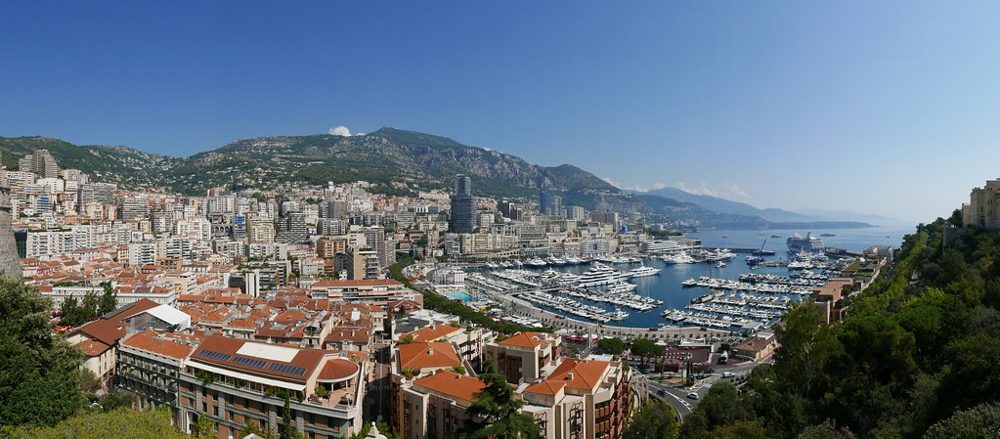
Monaco vu des hauteursMaya adore la mer, c'est pourquoi nous allons souvent à la plage du Larvotto.
Maya adora il mare, per questo andiamo spesso alla spiaggia del Larvotto.Il y avait des travaux sur l'autoroute, c'est pourquoi je suis arrivée en retard.
C'erano lavori in autostrada, per questo sono arrivata in ritardo.Ma fille vit à Monaco ; c'est la raison pour laquelle j'apprends le français.
Mia figlia vive a Monaco: è il motivo per cui studio il francese.Appelle le garage au plus vite : la voiture fait un bruit bizarre.
Chiama l'officina al più presto: la macchina fa un rumore strano.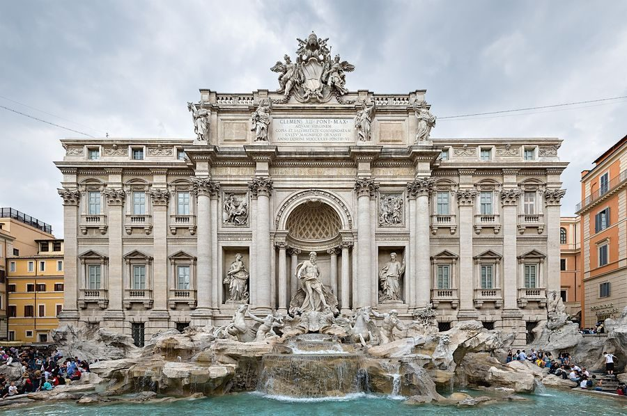
La fontaine de Trevi, RomeCette règle va à l'encontre du bon sens.
Questa regola va contro il buon senso.Je ne veux pas aller à l'encontre de l'avis de Claudia.
Non voglio andare contro il parere di Claudia.Mets ton clignotant avant de tourner à droite !
Metti la freccia prima di girare a destra!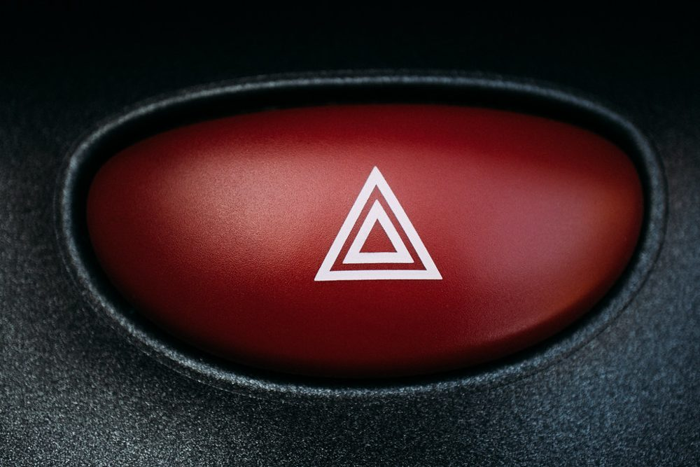
Le bouton des feux de détresseIl y avait un accident, alors j'ai mis mes warnings.
C'era un incidente, così ho messo le quattro frecce.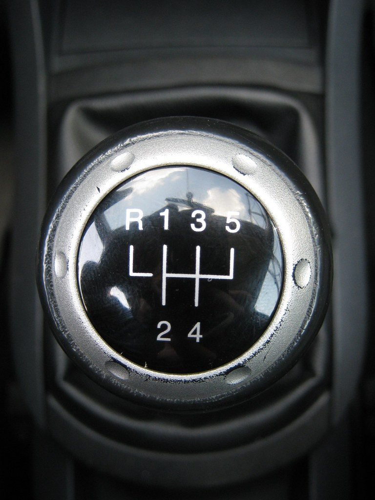
Le levier de vitesseDans la montée vers Monte-Carlo, je passe en seconde.
Nella salita verso Monte-Carlo, metto la seconda.Avec une boîte automatique, on n'a pas besoin de passer les vitesses.
Con il cambio automatico non c'è bisogno di cambiare marcia.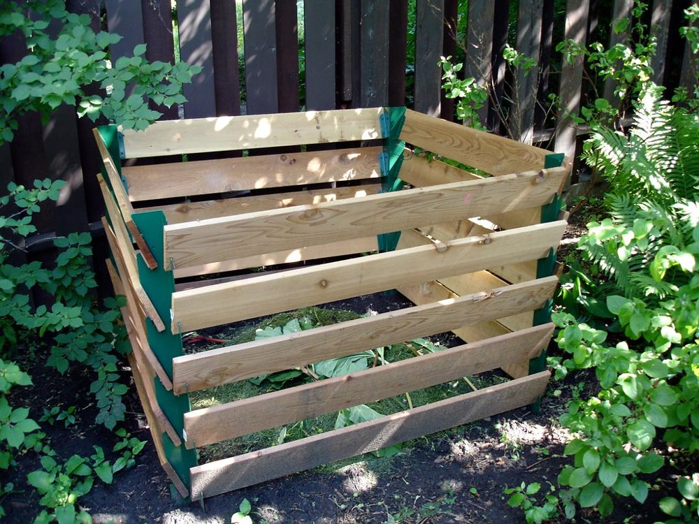
Un bac à compostNous mettons les épluchures de légumes dans le composteur pour faire du compost.
Mettiamo le bucce delle verdure nella compostiera per fare il compost.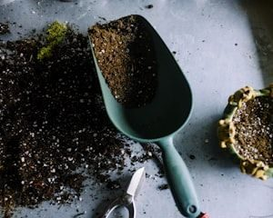
Une pelle de jardin et de la terreAu printemps, je mets un peu d'engrais sur les rosiers.
In primavera metto un po' di concime sulle rose.aller à l'encontre de ≠ andare incontro a
Cette décision va à l'encontre de nos principes.
Questa decisione va contro i nostri principi.Je vais à la rencontre de ma fille à la gare.
Vado incontro a mia figlia alla stazione.aller à l'encontre de = s'opposer à · aller à la rencontre de = aller vers quelqu'un. Et pour venire incontro (aiutare) : faire un geste, arranger quelqu'un.aller à l'encontre de = andare contro · aller à la rencontre de = andare incontro a qualcuno · venire incontro (aiutare) = faire un geste, arranger quelqu'un.
Le vendeur a fait un geste sur le prix.
Il venditore ci è venuto incontro sul prezzo.Prononciation
Pronunciafaim, fin… et femme
fame, fine… e donna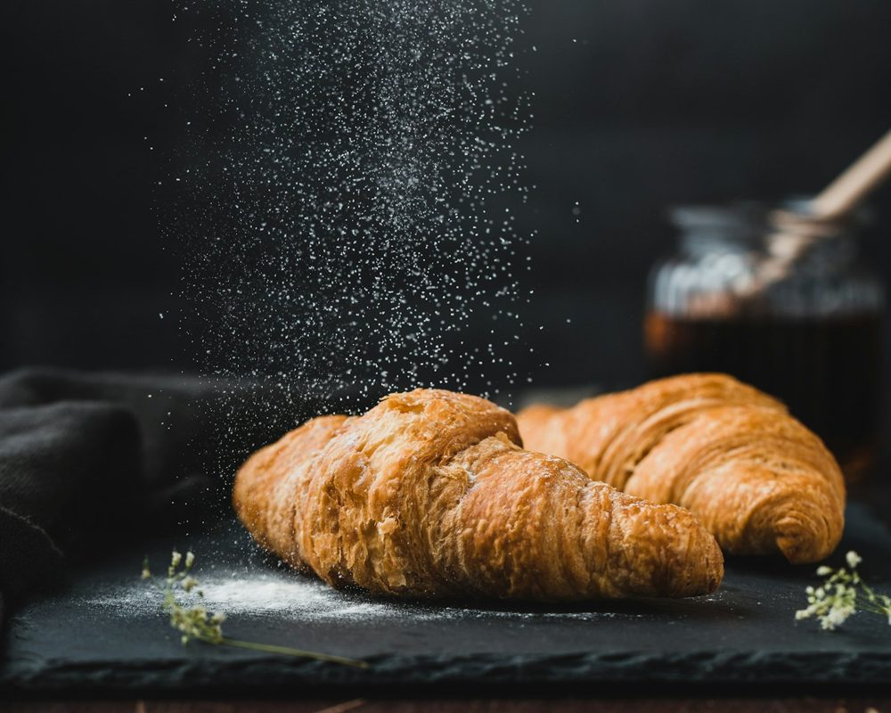
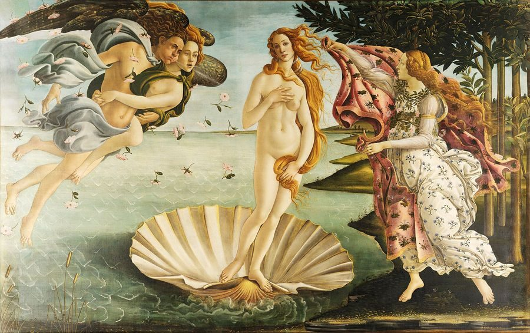
Faim et fin se prononcent exactement de la même façon : [fɛ̃], comme dans pain ou vin. Le m et le n ne se prononcent pas, ils rendent la voyelle nasale. Dans femme, au contraire, le e se prononce a : [fam].Faim e fin si pronunciano esattamente allo stesso modo: [fɛ̃], come in pain o vin. La m e la n non si pronunciano, rendono nasale la vocale. In femme, invece, la e si pronuncia a: [fam].
Avoir faim : les nuances
Avere fame: le sfumatureOn dit avoir faim (avere fame), sans article. J'ai très faim est la forme courante ; j'ai trop faim est familier ; j'ai une faim de loup = ho una fame da lupi.Si dice avoir faim, senza articolo. J'ai très faim è la forma corrente; j'ai trop faim è familiare; j'ai une faim de loup = ho una fame da lupi.
J'ai faim.
Ho fame.Je n'ai pas très faim.
Non ho molta fame.J'ai trop faim !
Ho una fame!C'est la fin du film.
È la fine del film.Ma fille est une femme formidable.
Mia figlia è una donna straordinaria.cueillir, recueil, accueil
raccogliere, raccolta, accoglienza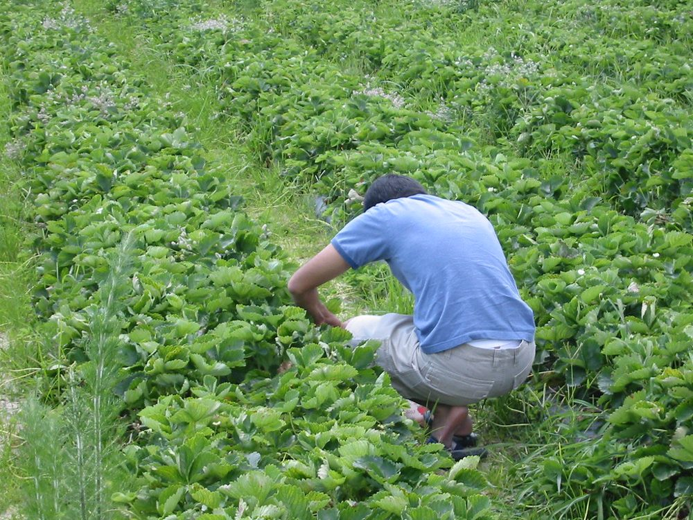
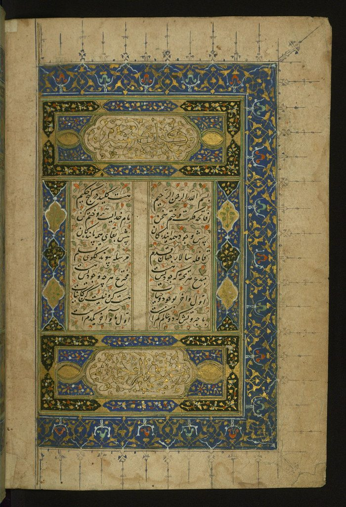
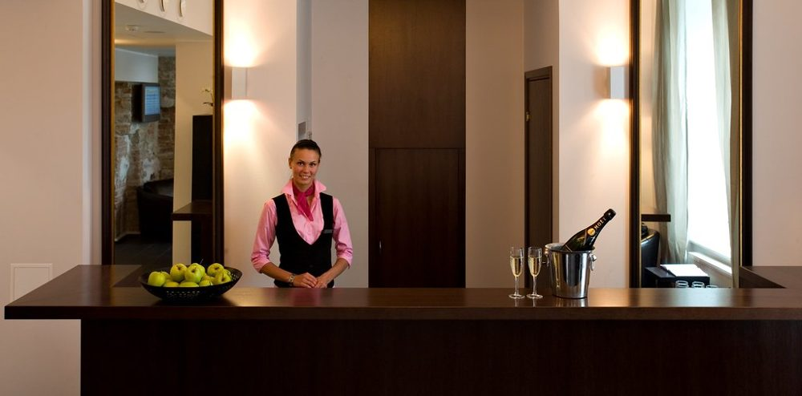
Dans ces mots, ue se prononce comme eu : on entend [kœj], comme dans feuille ou œil. Pourquoi cette orthographe ? Pour que le c reste dur [k] : on écrit cueil, car ceuil se lirait [sœj].In queste parole ue si pronuncia come eu: si sente [kœj], come in feuille o œil. Perché questa grafia? Perché la c resti dura [k]: si scrive cueil, perché ceuil si leggerebbe [sœj].
Conjugaison : comme un verbe en -er
Coniugazione: come un verbo in -erAu présent : je cueille, tu cueilles, il cueille, nous cueillons, vous cueillez, ils cueillent. Futur : je cueillerai. Passé composé : j'ai cueilli. Accueillir se conjugue de la même façon : j'accueille, j'accueillerai, j'ai accueilli.Al presente si coniuga come un verbo in -er. Futuro: je cueillerai. Passato prossimo: j'ai cueilli. Accueillir si coniuga allo stesso modo.
Avec Maya, nous cueillons des fraises au jardin.
Con Maya raccogliamo le fragole in giardino.J'ai offert à Claudia un recueil de poèmes de Prévert.
Ho regalato a Claudia una raccolta di poesie di Prévert.L'accueil de l'hôtel est ouvert jour et nuit.
La reception dell'albergo è aperta giorno e notte.Ma fille m'accueille toujours avec un grand sourire.
Mia figlia mi accoglie sempre con un gran sorriso.Grammaire : ne… aucun et ne… que
Grammatica: ne… aucun e ne… que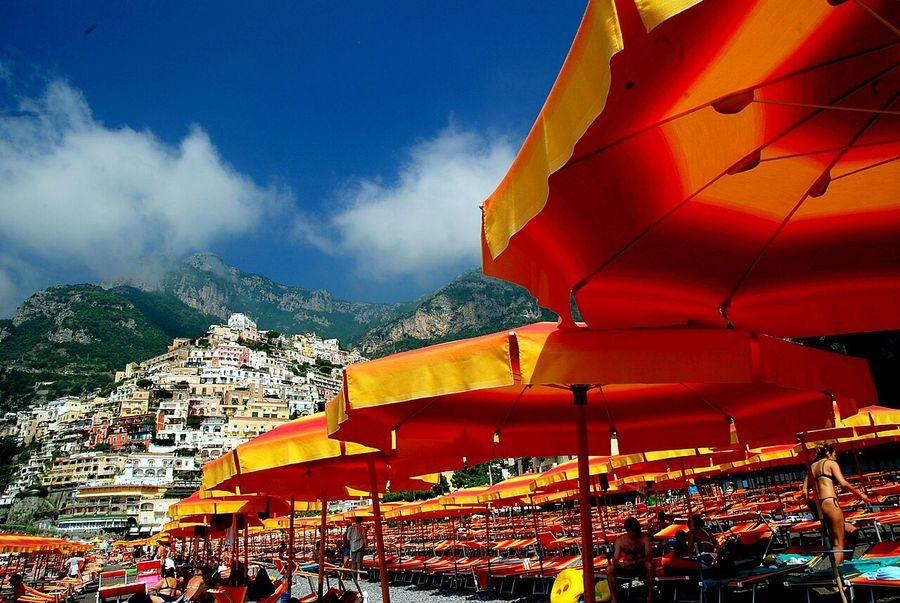
Ne… aucun(e) : pas un seul
Ne… aucun(e): nemmeno unoJe n'ai aucune idée.
Non ho nessuna idea.Il n'y a aucune place pour se garer.
Non c'è nessun posto per parcheggiare.1 · L'accord
Aucun s'accorde en genre avec le nom et reste presque toujours au singulier : aucun voisin, aucune voiture.
Aucun si accorda in genere con il nome e resta quasi sempre al singolare.2 · Jamais avec pas
Aucun remplace pas : on dit je n'ai aucune idée, avec seulement ne.
Aucun sostituisce pas: si usa solo ne.3 · En sujet
En début de phrase : Aucun(e) + nom + ne + verbe.
All'inizio della frase: aucun(e) + nome + ne + verbo.Aucune voiture ne passe.
Non passa nessuna macchina.4 · Aux temps composés
Aucun se place après le participe passé, contrairement à pas.
Aucun si mette dopo il participio passato, al contrario di pas.Je n'ai vu aucun clignotant.
Non ho visto nessuna freccia.5 · En pronom
Sans nom, aucun devient pronom ; avec un complément d'objet, on ajoute en.
Senza nome, aucun diventa pronome; come complemento oggetto si aggiunge en.Des engrais naturels ? Je n'en ai aucun.
Dei concimi naturali? Non ne ho nessuno.Aucun de mes voisins ne fait de compost.
Nessuno dei miei vicini fa il compost.Ne… que : seulement
Ne… que: solo, soltantoJe n'ai que dix minutes.
Ho solo dieci minuti.Je ne fais que passer.
Sono solo di passaggio.1 · Que se place devant l'élément limité
Le sens change selon la place de que.
Il senso cambia secondo la posizione di que.Maya ne mange que des fraises.
Maya mangia solo fragole.Maya ne mange des fraises qu'au jardin.
Maya mangia le fragole solo in giardino.2 · L'article reste
Ce n'est pas une négation : on garde du, de la, des.
Non è una negazione: si mantengono du, de la, des.Je ne bois que de l'eau.
Bevo solo acqua.Je ne bois pas d'eau.
Non bevo acqua.3 · Aux temps composés
Que se place après le participe passé.
Que si mette dopo il participio passato.Je n'ai cueilli que trois roses.
Ho raccolto solo tre rose.4 · Ne… que ou seulement ?
Même sens. Ne… que est très fréquent, à l'oral comme à l'écrit.
Stesso senso. Ne… que è molto frequente, sia all'orale sia allo scritto.J'ai seulement une heure. Je n'ai qu'une heure.
Ho solo un'ora.ne… aucun
négation totale : zéro
negazione totale: zeroJe n'ai aucune fraise.
Non ho nessuna fragola.ne… que
restriction : un peu, pas plus
restrizione: un po', non di piùJe n'ai que trois fraises.
Ho solo tre fragole.Photos : Rob Marson (port de Monaco), See-ming Lee (feux arrière), Ivan Radic (feux de détresse), Tilemahos Efthimiadis (levier de vitesse), daryl_mitchell (compost), joshstaiger (cueillette), mrsdkrebs (recueil), Unique Hotels Group (accueil) · licences Creative Commons.